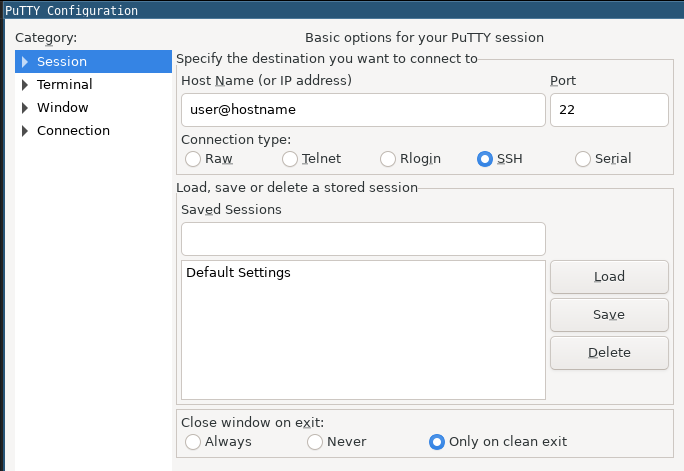
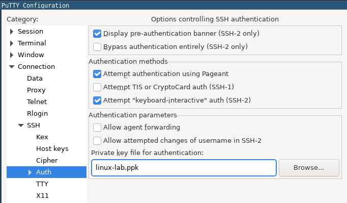

Posted on November 1, 2020 - 1 minute read
PuTTY Basics
PuTTY is a free and open-source terminal emulator, very popular as a SSH client; used primarily by Windows users.
SSH Connection
- Open PuTTY
- Select Session
- Enter the
username@hostname or just the remote hostname or IP address at Host Name. Example:
admin@192.168.1.2
- Connection: SSH
- Port: 22
- (Optional) Name your session in Saved Session field and click Save
- Click Open
DISCLAIMER: You may need to generate/add a private key for authentication.

Add a private key for authentication
- Connections
- Browse and select the private key for authentication. It should be a
.ppk file.

Create a private key with PuTTYGen
On Windows:
- Go to Windows Start menu
- Parameters:
- Type of key: RSA
- Number of bits in a generated key: 2048
- Generate
- Specify a passphrase for the key
- Save private key
On Linux:
puttygen -t rsa -b 2048 -C "user@host" -o keyfile.ppk
Check the PuTTYGen manual for more details.
Convert an Amazon .pem key to PuTTY .ppk key
On Windows:
- Go to Windows Start menu
- Parameters:
- Type of key: RSA
- Number of bits in a generated key: 2048
- Load
- Select your
.pem file for the key pair
- Open
- Save private key
On Linux:
puttygen keyfile.pem -O private -o keyfile.ppk
Check the Amazon Docs for more details.
More about PuTTY and PuTTYGen can be found at the manual page.